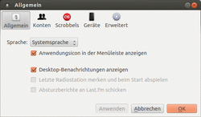
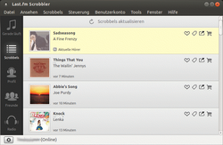
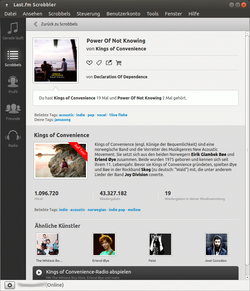
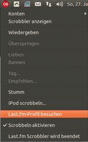

Last.fm Scrobbler
Archivierte Anleitung
Dieser Artikel wurde archiviert, da er - oder Teile daraus - nur noch unter einer älteren Ubuntu-Version nutzbar ist. Diese Anleitung wird vom Wiki-Team weder auf Richtigkeit überprüft noch anderweitig gepflegt. Zusätzlich wurde der Artikel für weitere Änderungen gesperrt.
Anmerkung: Quelle nicht mehr verfügbar
Zum Verständnis dieses Artikels sind folgende Seiten hilfreich:
Last.fm Scrobbler  ist das Nachfolge-Programm für den Archiv/LastFM Player (der noch auf der alten API basiert und nicht mehr funktionsfähig ist). Das Programm ist in Qt verfasst. Es bietet Zugriff auf last.fm und die persönliche last.fm-Benutzerseite, und konnte neben dem "Scrobbeln" auch Sender abspielen - die Wiedergabe war allerdings nur für zahlende Kunden möglich und ist seit dem Ende April 2014 gar nicht mehr gegeben. Eine Internetverbindung ist natürlich Voraussetzung zur Nutzung.
ist das Nachfolge-Programm für den Archiv/LastFM Player (der noch auf der alten API basiert und nicht mehr funktionsfähig ist). Das Programm ist in Qt verfasst. Es bietet Zugriff auf last.fm und die persönliche last.fm-Benutzerseite, und konnte neben dem "Scrobbeln" auch Sender abspielen - die Wiedergabe war allerdings nur für zahlende Kunden möglich und ist seit dem Ende April 2014 gar nicht mehr gegeben. Eine Internetverbindung ist natürlich Voraussetzung zur Nutzung.
Installation¶
Das Programm ist nicht in den offiziellen Paketquellen enthalten. Es existiert aber eine Paketquelle[1] für Ubuntu 12.04.
Um aus der Fremdquelle zu installieren, muss man die folgenden Paketquellen freischalten:
Hinweis!
Zusätzliche Fremdquellen können das System gefährden.
deb http://apt.last.fm/debian VERSION main
Um die Fremdquelle zu authentifizieren, kann man
entweder den Signierungsschlüssel herunterladen  und in der Paketverwaltung hinzufügen oder folgenden Befehl ausführen:
und in der Paketverwaltung hinzufügen oder folgenden Befehl ausführen:
wget -q http://apt.last.fm/last.fm.repo.gpg -O- | sudo apt-key add -
Nach Aktualisierung der Paketquellen kann es über das folgende Paket installiert[2] werden:
lastfm-scrobbler (ppa)
 mit apturl
mit apturl
Paketliste zum Kopieren:
sudo apt-get install lastfm-scrobbler
sudo aptitude install lastfm-scrobbler
Das Programm kann auch aus dem Quellcode erstellt werden, siehe dazu Archiv/Last.fm Scrobbler/Kompilieren.
Fremdpakete¶
Wer keine Fremdquelle aktivieren möchte, kann die Pakete direkt von der Downloadseite beziehen, es wird liblastfm1*.deb, liblastfm-fingerprint*.deb sowie lastfm-scrobbler*.deb in der passenden Version und Architektur benötigt.
Hinweis!
Fremdpakete können das System gefährden.

Konfiguration¶
Um das Programm über die Unity-Dash starten zu können[3], muss die .desktop-Datei /usr/share/applications/lastfm-client.desktop in einem Editor[4] mit Root-Rechten bearbeitet werden; dort muss der Eintrag in der Exec-Zeile von /usr/bin/lastfm-client in usr/bin/lastfm-scrobbler umgeändert werden.
Zur Nutzung ist ein Benutzerkonto bei last.fm nötig, mit dem die Anwendung verbunden wird. Die grundlegenden Funktionen können mit einem kostenlosen Benutzerkonto genutzt werden. Die Konfiguration erfolgt im Hauptfenster im Reiter "Tools -> Optionen" (oder Schaltfläche ganz unter links im Playerfenster), dort wird unter "Allgemein" die zu verwendende Sprache sowie Anzeigeoptionen angegeben. Die weiteren Einstellungen sind weitgehend selbsterklärend; allerdings funktionieren die Optionen zu "Absturz-Bericht an last.fm schicken" sowie "Letzte Radio-Station merken und beim Start abspielen" momentan (Version 2.1.33) nicht, sie lassen sich nicht auswählen. Last.fm warnt vor gleichzeitiger Verwendung mit dem iOS-Scrobbler , da es damit zu doppelten und fehlerhaften Einträgen kommt; gleichzeitige Verwendung von iTunes Match führt ebenfalls zu Problemen. Das Scrobbeln kann auch ganz deaktiviert werden. Unter "Erweitert" kann ein Proxy angegeben werden.
Bei der ersten Anmeldung wurde zunächst eine "Aktivierung" nötig, um den als "dienstfremden" erkannten Programm den Zugriff auf die eigene Benutzerseite zu gestatten. Das wiederholte sich auch, wenn man weitere Benutzerkonten angeben will, allerdings noch auf dem momentan genutzten Konto eingeloggt ist. Dazu musste man den aktuellen Benutzer zunächst auf der last.fm-Seite abmelden, um sich dann mit dem weiteren Account wieder anzumelden bzw. für diesen den Zugriff erlauben zu können.
Beim ersten Start wird eine kurze Einführung angezeigt, die über "Hilfe -> Tour" auch wiederholt werden kann.

Bedienung¶
Unter "Gerade läuft" konnten Abonnenten Radiosender angeben und abspielen, zum aktuell gespielten Titel werden dann Informationen zum Stück, statistischen Details etc. angezeigt (ähnlich den Details beim Scrobbeln). Seit dem 24.04. 2014 ist dieser Tab für die Linux-Version völlig nutzlos; in externen Player abgespielte und gescrobbelte Titel werden, anders als für die Windows-Version, nicht angezeigt.

Unter "Scrobbels" werden die letzten ca. 30 gescrobbelten Titel angezeigt, mit der Möglichkeit, sie zu den Lieblingstiteln hinzuzufügen, mit einem Tag zu versehen, sie anderen Nutzern zu empfehlen, oder bei einschlägigen Internetplattformen zu kaufen. Ein  -Klick auf den jeweiligen Titel öffnet eine Infoseite mit diversen Angaben zu dem Titel, Hörverhalten, ähnlichen Künstlern etc. Weiter Informationen werden dann im eingestellten Standardbrowser auf der jeweiligen Last.fm-Seite aufgerufen.
-Klick auf den jeweiligen Titel öffnet eine Infoseite mit diversen Angaben zu dem Titel, Hörverhalten, ähnlichen Künstlern etc. Weiter Informationen werden dann im eingestellten Standardbrowser auf der jeweiligen Last.fm-Seite aufgerufen.
Unter "Profil" wird eine kurze Zusammenfassung des eigenen Benutzerprofils (beliebteste Künstler der letzten Woche und allgemein) angezeigt, unter "Freunde" die last.fm-Freunde und deren zuletzt gehörter Titel aufgeführt. Bei Anklicken der Items wird für weiterführende Informationen auch hier die jeweilige last.fm-Seite im Browser geöffnet.
Unter "Hilfe" führen die Einträge "FAQ" und "Foren" auf die entsprechenden last.fm-Seiten.

Steuerung über das Trayicon¶
Das Programm kann über das Kontextmenü des Trayicons (/ -Klick auf das Symbol) gesteuert werden. Dazu muss allerdings unter Unity ein Eintrag in die Whitelist erfolgen, damit das Symbol angezeigt wird. Das Programm lässt sich nur über diesen Weg auch tatsächlich beenden. Ein Schließen des Playerfenster führt nur zu einer Minimierung, es läuft dann wie Skype im Hintergrund weiter. Ein weitere Möglichkeit ist das Beenden des Programms mit folgendem Befehl[5]:
-Klick auf das Symbol) gesteuert werden. Dazu muss allerdings unter Unity ein Eintrag in die Whitelist erfolgen, damit das Symbol angezeigt wird. Das Programm lässt sich nur über diesen Weg auch tatsächlich beenden. Ein Schließen des Playerfenster führt nur zu einer Minimierung, es läuft dann wie Skype im Hintergrund weiter. Ein weitere Möglichkeit ist das Beenden des Programms mit folgendem Befehl[5]:
killall lastfm-scrobbler
Probleme¶
Im last.fm-Scrobbler wird das Scrobbeln der Titel über den last.fm-integrierten YouTube-Player oder über Player wie Banshee, Amarok oder Rhythmbox angezeigt, allerdings erfolgt dann, anders als die Angabe in der Anwendung vermuten ließe, keine Anzeige im "Gerade läuft"-Tab. Dieses Feature funktioniert anscheinend unter iOS- und Windows-Versionen des Scrobblers, nicht aber unter Linux (siehe auch "issue"  auf github).
auf github).
Bei abwechselnder Nutzung mehrerer Konten kann es zur Anzeige von "falschen" Scrobbels kommen, die tatsächlich dem anderen Konto zuzuordnen sind; das tritt anscheinend auf, wenn von dem weiteren Konto noch nicht genügend Titel (ca. 30) mit dem Scrobbler übertragen wurden. Auf der jeweiligen Benutzerseite selbst werden glücklicherweise nur die tatsächlich gespielten Titel aufgeführt.
Die Details zu den Scrobbels sind nicht immer akkurat; wenn ein Titel noch nicht lange genug angespielt wurde, werden ggf. falsche Werte zur Wiedergabeanzahl angezeigt.
Tastenkürzel¶
| last.fm Scrobbler | |
| Taste(n) | Funktion |
| Strg + Q | "Datei -> Beenden" |
| Strg + 1 | "Ansehen -> Gerade läuft" |
| Strg + 2 | "Ansehen -> Scrobbles" |
| Strg + 3 | "Ansehen -> Profil" |
| Strg + 4 | "Ansehen -> Freunde" |
| Strg + ] | "Ansehen -> Nächster Abschnitt" |
| Strg + [ | "Ansehen -> Vorheriger Abschnitt" |
| Strg + B | "Ansehen -> Mein Last.fm-Profil" (auf der Last.fm-Seite) |
| Strg + ⇧ + R | "Scrobbels -> Aktualisieren" |
| Strg + L | "Steuerung -> Lieben" |
| Strg + B | "Steuerung -> Bannen" |
| Strg + T | "Steuerung -> Tag..." |
| Strg + S | "Steuerung -> Empfehlen..." |
| Strg + Alt + ↓ | "Steuerung -> Stumm" |
| Strg + M | "Fenster -> Minimieren" |
"Alternativen"¶
Zum "Abspielen" bleibt nur die Verwendung des integrierten YouTube-Players auf der last.fm-Seite.
- Erstellt mit Inyoka
-
 2004 – 2017 ubuntuusers.de • Einige Rechte vorbehalten
2004 – 2017 ubuntuusers.de • Einige Rechte vorbehalten
Lizenz • Kontakt • Datenschutz • Impressum • Serverstatus -
Serverhousing gespendet von